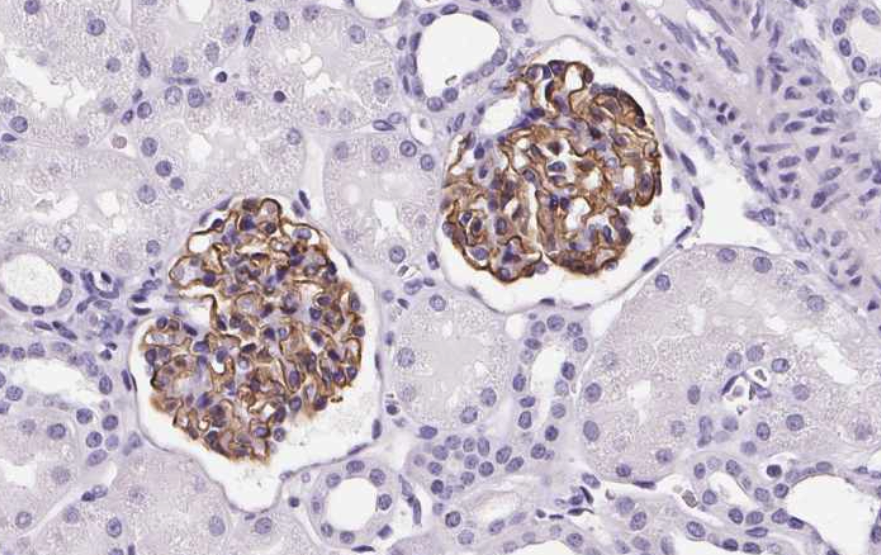
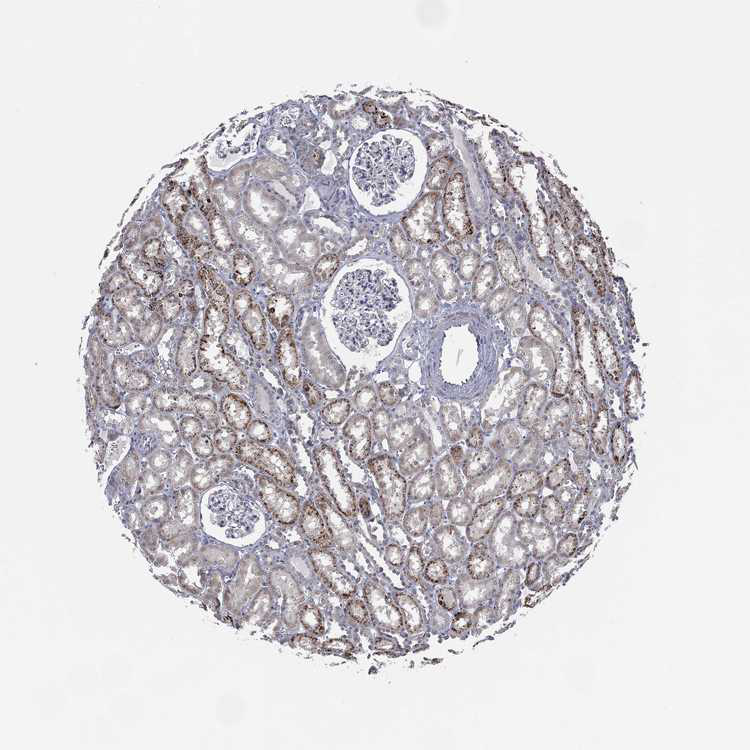

Data Collection
We will be scraping histologic tissue slices from the Human Protein Atlas, which they explicitly allow here.
They provide datasets of available images and respective metadata. I am only interested in largeintestine, kidney, lung, spleen, prostate, preferably without stains.
Here is an (cropped) example:

import numpy as np
import pandas as pd
import shutil
from bs4 import BeautifulSoup as BS
import time
from tqdm import tqdm
import requests
from pathlib import Path
from PIL import Imagedf = pd.read_csv("https://www.proteinatlas.org/download/normal_tissue.tsv.zip", delimiter="\t")
df.head()Gene Gene name Tissue Cell type \
0 ENSG00000000003 TSPAN6 adipose tissue adipocytes
1 ENSG00000000003 TSPAN6 adrenal gland glandular cells
2 ENSG00000000003 TSPAN6 appendix glandular cells
3 ENSG00000000003 TSPAN6 appendix lymphoid tissue
4 ENSG00000000003 TSPAN6 bone marrow hematopoietic cells
Level Reliability
0 Not detected Approved
1 Not detected Approved
2 Medium Approved
3 Not detected Approved
4 Not detected Approved Let's see which tissues they have images of.
df.Tissue.unique()array(['adipose tissue', 'adrenal gland', 'appendix', 'bone marrow',
'breast', 'bronchus', 'caudate', 'cerebellum', 'cerebral cortex',
'cervix', 'colon', 'duodenum', 'endometrium 1', 'endometrium 2',
'epididymis', 'esophagus', 'fallopian tube', 'gallbladder',
'heart muscle', 'hippocampus', 'kidney', 'liver', 'lung',
'lymph node', 'nasopharynx', 'oral mucosa', 'ovary', 'pancreas',
'parathyroid gland', 'placenta', 'prostate', 'rectum',
'salivary gland', 'seminal vesicle', 'skeletal muscle', 'skin 1',
'skin 2', 'small intestine', 'smooth muscle', 'soft tissue 1',
'soft tissue 2', 'spleen', 'stomach 1', 'stomach 2', 'testis',
'thyroid gland', 'tonsil', 'urinary bladder', 'vagina', nan,
'hypothalamus', 'endometrium', 'hair', 'retina',
'lactating breast', 'skin', 'thymus', 'cartilage', 'eye',
'pituitary gland', 'choroid plexus', 'dorsal raphe',
'substantia nigra', 'sole of foot'], dtype=object) Every tissue I am interest in is present! (Colon = large Intestine) Let's get rid of everything else.
tissues = set("colon kidney lung prostate spleen".split())
mask = df.Tissue.isin(tissues)
df = df[mask]
df.Tissue.unique()array(['colon', 'kidney', 'lung', 'prostate', 'spleen'], dtype=object)
All images have been stained with some antibody, but we actually don't want stained images. That's why we're only keeping those images in which no antigen has been detected (meaning no visible stain is present in these images).
df = df[df.Level == "Not detected"]
df.Level.unique()array(['Not detected'], dtype=object)
df.head()Gene Gene name Tissue Cell type \
20 ENSG00000000003 TSPAN6 colon endothelial cells
22 ENSG00000000003 TSPAN6 colon peripheral nerve/ganglion
35 ENSG00000000003 TSPAN6 kidney cells in glomeruli
40 ENSG00000000003 TSPAN6 lung macrophages
67 ENSG00000000003 TSPAN6 spleen cells in red pulp
Level Reliability
20 Not detected Approved
22 Not detected Approved
35 Not detected Approved
40 Not detected Approved
67 Not detected Approved Cell types and reliability are not relevant in this usecase, so let's just get rid of those columns. Also, the actual name of the gene is redundant.
del df["Cell type"], df["Reliability"], df["Level"], df["Gene name"]
dfGene Tissue 20 ENSG00000000003 colon 22 ENSG00000000003 colon 35 ENSG00000000003 kidney 40 ENSG00000000003 lung 67 ENSG00000000003 spleen ... ... ... 1194410 ENSG00000288602 kidney 1194414 ENSG00000288602 lung 1194415 ENSG00000288602 lung 1194416 ENSG00000288602 lung 1194457 ENSG00000288602 spleen [67054 rows x 2 columns]
Some genes appear multiple times per organ. Let's remove those duplicates.
df = df.drop_duplicates(subset=["Gene", "Tissue"])
dfGene Tissue 20 ENSG00000000003 colon 35 ENSG00000000003 kidney 40 ENSG00000000003 lung 67 ENSG00000000003 spleen 196 ENSG00000000457 lung ... ... ... 1194296 ENSG00000288558 lung 1194388 ENSG00000288602 colon 1194410 ENSG00000288602 kidney 1194414 ENSG00000288602 lung 1194457 ENSG00000288602 spleen [37915 rows x 2 columns]
Now, how many genes per organ do we get?
df.groupby("Tissue").count()Gene Tissue colon 7338 kidney 7732 lung 8747 prostate 5174 spleen 8924
To many to just download all at once, so we will randomly select 25 of each tissue. Since many genes have been more than one image, we will and up which 2-3 times as many images.
rand_indices = []
for t in df.Tissue.unique():
rand_idx = list(np.random.choice(df[df.Tissue==t].index, size=25))
rand_indices = [*rand_indices, *rand_idx]
df = df.loc[rand_indices]
df.groupby("Tissue").count()Gene Tissue colon 25 kidney 25 lung 25 prostate 25 spleen 25
Now, we need to build the URL's of those images. Most genes have multiple images so we are going to expand our dataset with links to every image of every gene.
def build_url(embl, tissue): return f"https://www.proteinatlas.org/{embl}/tissue/{tissue}"
def extract_image_urls(htext):
soup = BS(htext)
image_urls = soup.body.findAll("img")
image_urls = [il.get_attribute_list("src")[0] for il in image_urls]
image_urls = [il for il in image_urls if "proteinatlas" in il]
image_urls = ["https:"+im_url for im_url in image_urls]
return image_urlsurls = []
for gene, tissue in tqdm(list(zip(df.Gene.values, df.Tissue.values))):
url = build_url(gene, tissue)
r = requests.get(url)
if r.status_code != 200:
print(f"Url: {url} didn't work")
urls.append(None)
continue
urls.append(";".join(extract_image_urls(r.text)))
time.sleep(0.1)
df["urls"] = urlsWe save the data, so that we don't have to run this code twice.
df.to_csv("protein_atlas_scrape.csv", index=False)And finally, we download the images.
def download_image(image_url, filename):
try:
r = requests.get(image_url, stream=True)
if r.status_code == 200:
r.raw.decode_content = True
with open(filename,'wb') as f: shutil.copyfileobj(r.raw, f)
else: return
except: returnDOWNLOAD_DIR = Path("images")
DOWNLOAD_DIR.mkdir(exist_ok=True)
for _,row in tqdm(df.iterrows(), total=len(df)):
for i, url in enumerate(row.urls.split(";")):
image_name = DOWNLOAD_DIR/f"{row.Gene}_{row.Tissue}_{i}.jpg"
download_image(url, image_name)
time.sleep(0.1)len(list(Path("images").iterdir()))506
Now we have 506 images! Let's look at a random one.
#| label: Scraped Image
#| fig-cap: Random Image from our new new dataset.
image_file = np.random.choice(list(Path("images").iterdir()))
Image.open(image_file)
<PIL.JpegImagePlugin.JpegImageFile image mode=RGB size=750x750>
And there we go! We now have histologic images we can use for anything we like.